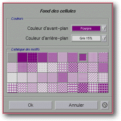

<!-- Documentation XQuad (c)1995-2000 AXENE contact axene@axene.org>
<html>

<head>
<title>Mise en forme des nombres</title>
</head>

<body BGCOLOR="#FFFFFF" BACKGROUND="Images/back.gif" TEXT="#000000">

<p ALIGN="right">  </p>

<p><br>
<br>
La boîte Attribution de Fond aux cellules permet de choisir les couleurs et le motif de
fonds des cellules de la région sélectionnée. <br>
<br>
</p>

<hr>

<p align="center"><br>
 <br>
<small><i>Photo d'écran&nbsp;: Boîte 'Attribution de fonds aux cellules'. </i></small></p>

<p><br>
</p>

<hr>

<p><br>
</p>

<h3>Partie supérieure de la boîte de dialogue&nbsp;:</h3>

<ul>
  <li><a NAME="list_foreground_color">la liste déroulante <i>&quot;Couleur d'avant-plan&quot;</i>
    permet de <b>choisir la couleur d'avant-plan du motif</b> à appliquer aux cellules. La
    liste des couleurs est définie grâce à la boîte de dialogue </a><a HREF="Box_Color.html">'Préparation des couleurs'</a>. <br>
    &nbsp;</li>
  <li><a NAME="list_background_color">la liste déroulante <i>&quot;Couleur
    d'arrière-plan&quot;</i> permet de <b>choisir la couleur d'arrière-plan du motif</b> à
    appliquer aux cellules. </a><br>
    &nbsp;</li>
  <li><a NAME="section_pattern">la section <i>&quot;Catalogue des motifs&quot;</i> donne un
    aperçu des motifs disponibles. Pour <b>changer le motif de fond des cellules</b> de la
    région sélectionnée, il suffit de cliquer sur un des motifs affichés. Le motif
    sélectionné est entouré d'un cadre épais. Le motif en haut à gauche est le motif par
    défaut de la feuille, il apparaît en blanc à l'impression. </a></li>
</ul>

<p><br>
</p>

<h3>Partie inférieure de la boîte de dialogue&nbsp;:</h3>

<ul>
  <li><a NAME="button_ok"><i>&quot;Ok&quot;</i> <b>change le motif de fond des cellules
    sélectionnées</b> par celui choisi dans la boîte. </a><br>
    &nbsp;</li>
  <li><a NAME="button_cancel"><i>&quot;Annuler&quot;</i> ferme la boîte <b>sans effectuer
    aucun changement</b>. </a></li>
</ul>

<p><br>
</p>

<hr>

<p ALIGN="right"></p>
</body>
</html>
